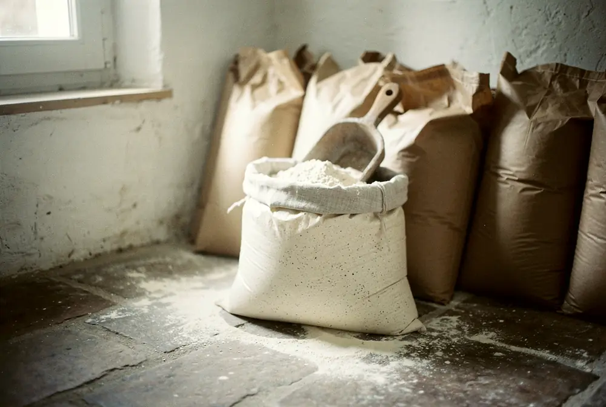
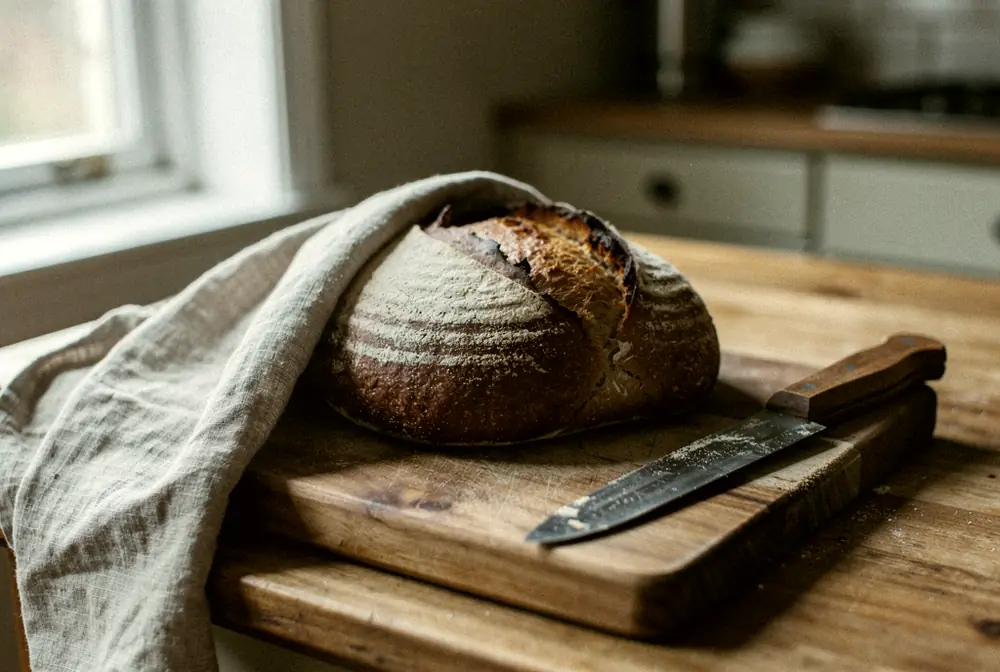

Le carnet du fournil
Ce qui change au fournil, noté à la date où ça arrive.

La farine de la récolte 2026 est arrivée
Premier camion de T80, blé coupé le 11 juillet aux Gâts, moulu sur meule de pierre au moulin Bréchard.
Une farine neuve boit un peu plus d’eau : on ajuste la pâte pendant deux semaines, sans changer la recette.
Article complet à la mise en ligne du carnet.

Garder une miche six jours
Un torchon de lin, la coupe posée contre la planche. Jamais au frigo : le froid rassit la mie.
Le cinquième jour, elle se grille. Le sixième, elle fait encore de bonnes tartines.
Article complet à la mise en ligne du carnet.

Le seigle revient le jeudi
La tourte de seigle de 800 g, à 6,80 €, chaque jeudi jusqu’en mars.
Mie brune et serrée, un peu acide : elle tient une semaine sous un torchon.
Article complet à la mise en ligne du carnet.
Commander pour demain →